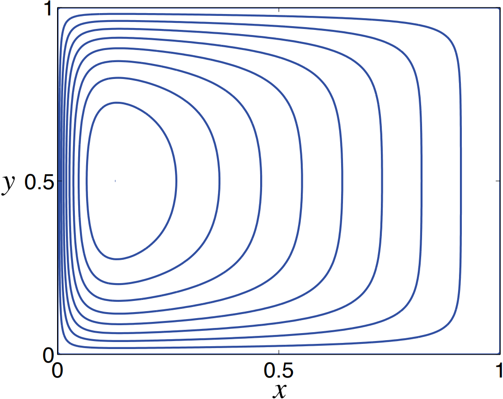

The boundary conditions necessary to complete the solution are

Obtaining the solution at the southern boundary analytically is quite algebraically tedious and is
easier done numerically. The figure shows solutions to the Stommel problem with a wind stress that increases linearly from $y = 0$ to $y = 1$. The interior solution is $\psi_I = (1-x)$, or $v_I = -1$, necessitating zonal boundary layers at $y = 0$ and $y = 1$, as well as a western boundary layer at $x = 0$.
The nondimensional thickness of the zonal boundary layers is \(\epsilon_S^{1/2}\). This is thicker than the western boundary layer because it scales as the square root of a small parameter.
The thickness comes from the leading balance in the dimensional vorticity equation
$$
r \frac{\partial^2 \psi}{\partial y^2} + \beta \frac{\partial \psi}{\partial x} = 0
$$
1Vallis, G.K. (2017) Atmospheric and Oceanic Fluid Dynamics: Fundamentals and Large-Scale Circulation. 2nd edn. Cambridge: Cambridge University Press.